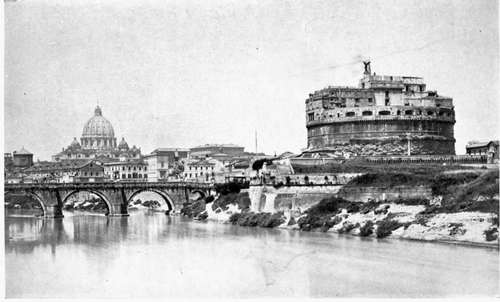

The Murder Of The Duke Of Gandia. Part 5
Description
This section is from the book "The Life Of Cesare Borgia", by Rafael Sabatini. Also available from Amazon: The Life of Cesare Borgia.
The Murder Of The Duke Of Gandia. Part 5
1 It is rather odd that, in the course of casting about for a possible murderer of Gandia, public opinion should never have fastened upon Cardinal Alessandro Farnese. He had lately been stripped of the Patrimony of St. Peter that the governorship of this might be bestowed upon Gandia ; his resentment had been provoked by that action of the Pope's, and the relations between himself and the Borgias were strained in consequence. Possibly there was clear proof that he could have had no connection with the crime.
2 " El S. de Pesaro ha scripto qua de sua mano non haverla mai cognosciuta et esser impotente, alias la sententia non se potea dare. El prefato S. dice pero haver scripto cosi per obedire el Duca de Milano et Aschanio " (Collenuccio's letter from Rome to the Duke of Ferrara, Dec. 25, 1497).
What is of great importance to students of the history of the Borgias is that this was the first occasion on which the accusation of incest was raised. Of course it persisted; such a charge could not do otherwise. But now that we see in what soil it had its roots we shall know what importance to attach to it.
Not only did it persist, but it developed, as was but natural. Cesare and the dead Gandia were included in it, and presently it suggested a motive not dreamed of until then why Cesare might have been his brother's murderer.
Then, early in 1498, came the rumour that Cesare was intending to abandon the purple; and later writers, from Capello down to our own times, have chosen to see in Cesare's supposed contemplation of that step a motive so strong for the crime as to prove it in the most absolutely conclusive manner. In no case could it be such proof, even if it were admitted as a motive. But is it really so to be admitted ? Did such a motive exist at all ? Does it really follow as has been taken for granted that Cesare must have remained an ecclesiastic had Gandia lived ? We cannot see that it does. Indeed, such evidence as there is, when properly considered, points in the opposite direction, even if no account is taken of the fact that this was not the first occasion on which it was proposed that Cesare should abandon the ecclesiastical career, as is shown by the Ferrarese ambassador's dispatches of March 1493.
1 " Et mancho se e curate de fare prova de qua con Done per poterne chiarire el Rev. Legato che era qua, sebbene sua Excellentia tastandolo sopra cio gli ne abbia facto offerta." And further: " Anzi haverla conosciuta infinite volte, ma chel Papa non gelha tolta per altro se non per usare con lei " (Costabili's letter from Milan to the Duke of Ferrara, June 23, 1497).
It is contended that Gandia was a stumbling block to Cesare, and that Gandia held the secular possessions which Cesare coveted; but if that were really the case why, when eventually (some fourteen months after Gandia's death) Cesare doffed the purple to replace it by a soldier's harness, did he not assume the secular possessions that had been his brother's ?
His dead brother's lands and titles went to his dead brother's son, whilst Cesare's career was totally different, as his aims were totally different, from any that had been Gandia's, or that might have been Gandia's had the latter lived. True, Cesare became Captain-General of the Church in his dead brother's place; but for that his brother's death was not necessary. Gandia had neither the will nor the intellect to undertake the things that awaited Cesare. He was a soft natured, pleasure loving youth, whose way of life was already mapped out for him. His place was at Gandia, in Spain, and, whilst he might have continued lord of all the possessions that were his, it would have been Cesare's to become Duke of Valentinois, and to have made himself master of Romagna, precisely as he did.
In conclusion, Gandia's death no more advanced, than his life could have impeded, the career which Cesare afterwards made his own, and to say that Cesare murdered him to supplant him is to set up a theory which the subsequent facts of Cesare's life will nowise justify.
It is idle of Gregorovius to say that the logic of the crime is inexorable in its assigning the guilt to Cesare fatuous of him to suppose that, as he claims, he has definitely proved Cesare to be his brother's murderer.
There is much against Cesare Borgia, but it never has been proved, and never will be proved, that he was a fratricide. Indeed the few really known facts of the murder all point to a very different conclusion a conclusion more or less obvious, which has been discarded, presumably for no better reason than because it was obvious.
Where was all this need to go so far afield in quest of a probable murderer imbued with political motives ? Where the need to accuse in turn every enemy that Gandia could possibly possess before finally fastening upon his own brother ?
Certain evidence is afforded by the known facts of the case, scant as they are. It may not amount to much, but at least it is sufficient to warrant a plausible conclusion, and there is no justification for discarding it in favour of something for which not a particle of evidence is forthcoming.
There is, first of all, the man in the mask to be accounted for. That he is connected with the crime is eminently probable, if not absolutely certain.
It is to be remembered that for a month according to Burchard he had been in the habit of visiting Gandia almost daily. He comes to Vannozza's villa on the night of the murder. Is it too much to suppose that he brought a message from some one from whom he was in the habit of bringing messages ?
He was seen last on the crupper of Gandia's horse as the latter rode away towards the Jewish quarter.1 Gandia himself announced that he was bound on pleasure going to amuse himself. Even without the knowledge which we possess of his licentious habits, no doubt could arise as to the nature of the amusement upon which he was thus bound at dead of night; and there are the conclusions formed in the morning by his father, when it was found that Gandia had not returned.
Is it so very difficult to conceive that Gandia, in the course of the assignation to which he went, should have fallen into the hands of an irate father, husband, or brother ? Is it not really the obvious inference to draw from the few facts that we possess ? That it was the inference drawn by the Pope and clung to even some time after the crime and while rumours of a different sort were rife, is shown by the perquisition made in the house of Antonio Pico della Miran dola, who had a daughter whom it was conceived might have been the object of the young duke's nocturnal visit, and whose house was near the place where Gandia was flung into the Tiber.
We could hazard speculations that would account for the man in the mask, but it is not our business to speculate save where the indications are fairly clear.
Let us consider the significance of Gandia's tied hands and the wounds upon his body in addition to the mortal gash across his throat. To what does this condition point ? Surely not to a murder of expediency so much as to a fierce, lustful butchery of vengeance. Surely it suggests that Gandia may have been tortured before his throat was cut. Why else were his wrists pinioned ? Had he been swiftly done to death there would have been no need for that. Had hired assassins done the work they' would not have stayed to pinion him, nor do we think they would have troubled to fling him into the river ; they would have slain and left him where he fell.
1 The Ghetto was not yet in existence. It was not built until 1556, under Paul IV.
THE CASTLE AND BRIDGE OF SANT ANGELO (ROME).
The whole aspect of the case suggests the presence of the master, of the personal enemy himself. We can conceive Gandia's wrists being tied, to the end that this personal enemy might do his will upon the wretched young man, dealing him one by one the ten or fourteen wounds in the body before making an end of him by cutting his throat. We cannot explain the pinioned wrists in any other way. Then the man on the handsome white horse, the man whom the four others addressed as men address their lord. Remember his gold spurs a trifle, perhaps; but hired assassins do not wear gold spurs, even though their bestriding handsome white horses may be explainable.
Surely that was the master, the personal enemy himself and it was not Cesare, for Cesare at the time was at the Vatican.
There we must leave the mystery of the murder of the Duke of Gandia ; but we leave it convinced that, such scant evidence as there is, points to an affair of sordid gallantry, and nowise implicates his brother Cesare.
Continue to:
- prev: The Murder Of The Duke Of Gandia. Part 4
- Table of Contents
- next: Chapter V. The Renunciation Of The Purple